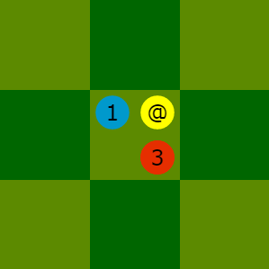
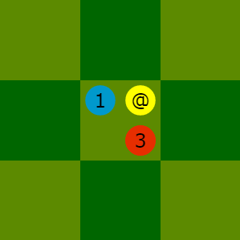

Rules of BALTEK ⚽🏃
Introduction Material Purpose How to start How to play Notation of moves Indexes of versions Revisions CopyrightBALTEK is a turn-based board game, inspired from football. Here are its principles:
The name of the game is built using sounds of the words ball
(BAL) and technical
(TEK).
Here is the material, shown in the image above:
@.
a3, with the label
#, is the goal defended by the blue team.
l3, with the label
#, is the goal defended by the red team.
The coordinates and the labels, @
and #
, are used for notation of moves.
The following picture shows the kickoff positions of the blue team.
The following picture shows the kickoff positions of the red team.

run
runcosts 1 credit and allows to move a footballer by 1 square.
runonce per turn.
rundoes not move the ball.
Example: the possible destinations for the blue 3 footballer have yellow borders.
sprint
sprintcosts 1 bonus and extends to 2 squares the move of a footballer.
sprintmust always be combined with the action
run.
Example: the possible destinations for the blue 3 footballer have yellow borders.

shoot
transmit the ball to a footballer,
send the ball to an empty squareand
shoot at the goalobey the same rules.
shootcosts 1 credit. If the general conditions and the force conditions are satisfied, the action allows to move the ball up to 2 squares along horizontal, vertical or diagonal directions. However, the trajectory of the ball is never curved.
shooterin the starting square of the ball.
shooterhas not already
shot.
shootershares his/ber square with an opponent, then the
shootermust:
dribble.
shootermoves the ball over an opponent, then the
shootermust:
effect.
Example: the possible destinations for the ball by the blue 3 shooter
have yellow borders;
none of these destinations requires dribble
or effect
.

dribble
shootmay be require this compensation .
dribblecompensates for the inferiority of the
shooterwith respect to the opponent sharing his/her square.
dribblecosts 1 credit per unit of compensated force.
Examples: to own the ball, the blue 2 shooter
must engage a dribble
costing 1 credit;
and the blue 1 shooter
must engage a dribble
costing 2 credits.
 

effect
shootmay be require this compensation .
effectcompensates for the inferiority of the
shooterwith respect to the opponent over which the ball passes.
effectcosts 1 credit per unit of compensated force.
effectis not necessary to pass over a footballer of his/her team.
Examples: to transmit the ball to the blue 2 footballer,
the blue 1 shooter
must perform an effect
costing 1 credit in the left context
and an effect
costing 2 credits in the right context.

If useful, the moves of the game are noted as in the following example.
@d3 f3g3 d1e1 / h3g3 g5f5 i3h3
e1e2 d5e4 f5g4 / f5e4 g1f1 i1h2
@e4 @g4+ / g3g4 i5i4 @i4
...
@# /
Optionally, annotations are added as in the following example.
#! BALTEK 1.1
#@ bernard@bois.fr robert@riviere.fr
#: 2014-12-24 11:09:30
@d3 f3g3 d1e1 / h3g3 g5f5 i3h3
e1e2 d5e4 f5g4 / f5e4 g1f1 i1h2
@e4 @g4+ / g3g4 i5i4 @i4
...
@# /
#: 2014-12-24 11:30:00
# The red bonus has been well played.
The notation is structured by rows. Here are its conventions:
## #! BALTEK 1.11.1of the BALTEK notation format; usable only once, in the first row.
#@bluethen
red; usable only once.
#:ISOformat, the date, then optionally the time; usable several times.
blueturn, followed by a
redturn.
/blueturn. The end of the line ends the
redturn .
runis noted using one word beginning with the starting square and ending with the arriving square. Example:
g3f3
sprint,
*is appended to the action word. Example:
g3e2*shotis noted using one word beginning with
@and ending with the arriving square. Example:
@c3
shot at goalis abbreviated as follows:
@#dribblecosting 1 credit,
+is appended to the action word. Example:
@c3+dribblecosting 2 credits,
++is appended to the action word. Example:
@c3++effectcosting 1 credit,
!is appended to the action word. Example:
@c3!effectcosting 2 credits,
!!is appended to the action word. Example:
@c3!!dribbleand
effect, each one costing 1 credit,
+!is appended to the action word. Example:
@c3+!
i.j.
1.0.
iis incremented by 1, and the second index
jis reset to 0.
jis incremented by 1 when the texts or the illustrations or the notation of moves or the structure of the document evolve, or a translation is added, but without changing the logic of the rules.
This document is version 1.2 of the BALTEK rules.
The table below summarizes the motivations for each version.
| Version | Description |
|---|---|
| 1.0 | Writing rules in French. |
| 1.1 | Clarification of the sprint option. Dribble and effect as new names for the compensations. More compact notation of moves. Writing in HTML. Screenshots from the HTML / JavaScript implementation. Translations in English, Esperanto and Portuguese. |
| 1.2 |
Copyright and license only provided in English, and inserted automatically in all translations.
Contributors are named and registered as Baltekians. |

BALTEK (the rules) describes a turn-based board game, inspired from football.
Copyright (C) 2017-2018 Lucas Borboleta (lucas.borboleta@free.fr) and Baltekians (see CONTRIBUTORS.md file).
This work is licensed under the Creative Commons Attribution-ShareAlike 4.0 International License. To view a copy of this license, visit http://creativecommons.org/licenses/by-sa/4.0.
Attribute work to URL https://github.com/LucasBorboleta/baltek-the-rules.